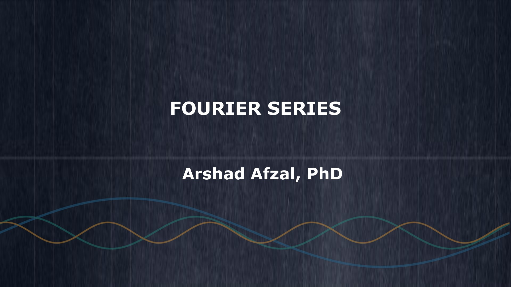

작성 완료
공업수학 II · 날짜 미기재
Fourier series(푸리에 급수)
내적과 직교성에서 시작해 푸리에 급수, 함수 근사, Sturm–Liouville 문제와 일반화된 급수까지 상세 해설과 풀이로 연결합니다.

공업수학 II · 강의자료 정리노트
원본 강의자료의 순서에 맞춰 개념과 공식의 이유를 설명하고, 문제의 풀이 과정까지 연결한 한국어 학습 노트입니다. 수업 자료만으로 공부할 수 있도록 기본 해설과 뉴비 해설을 함께 제공합니다.
Available notes
원본 첫 페이지로 자료를 확인하고, 정리노트 또는 원본 PDF를 바로 열 수 있습니다.
공업수학 II · 날짜 미기재
내적과 직교성에서 시작해 푸리에 급수, 함수 근사, Sturm–Liouville 문제와 일반화된 급수까지 상세 해설과 풀이로 연결합니다.

Reading modes
상단의 뉴비 모드 버튼으로 전환합니다. 선택한 모드는 정리노트와 자료 목록에도 이어집니다.
밝은 화면에서 핵심 개념, 공식의 유도, 단계별 문제 풀이를 이어 읽습니다. 원본 페이지와 해설을 함께 보며 흐름을 따라갈 수 있습니다.
다크 화면으로 전환하고 기호 읽기, 고등학교 수학, 계산 중간 단계를 추가합니다. English(한국어 번역) 용어 표기와 기본 해설은 그대로 유지합니다.